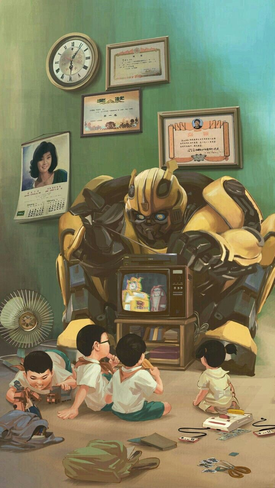

Bumblebee es uno de los Autobots más queridos
Desde sus primeras apariciones, Bumblebee se destacó por ser más pequeño, más cercano a los humanos y con una actitud amable y curiosa. Originalmente se transformaba en un Volkswagen Beetle, lo cual lo hacía más accesible y simpático que sus compañeros más imponentes. Esta elección lo volvió automáticamente más atractivo para el público joven.
A diferencia de otros Autobots más centrados en la batalla, Bumblebee funcionaba como puente emocional entre los humanos y los robots. Su personalidad juguetona y leal capturó los corazones de los fans, y fue protagonista de varias historias importantes en las series animadas y cómics. Incluso en momentos críticos, siempre mostró un corazón valiente.
En las películas modernas, Bumblebee adquirió aún más protagonismo, convirtiéndose prácticamente en el rostro de la franquicia para las nuevas generaciones. Su evolución de personaje secundario a héroe principal refleja cómo la conexión emocional con el público puede ser más poderosa que cualquier transformación espectacular.
← Volver a curiosidades de Transformers